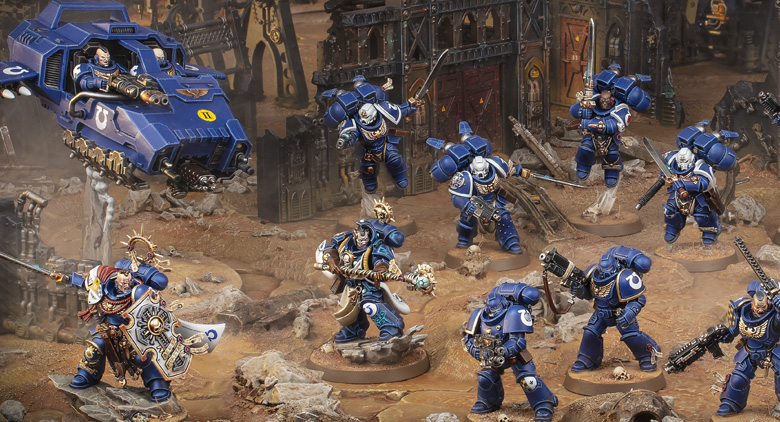
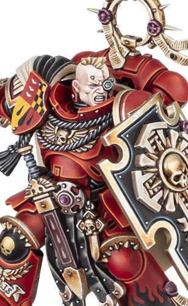
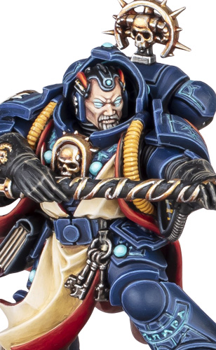
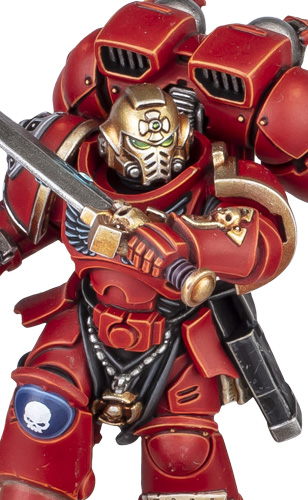
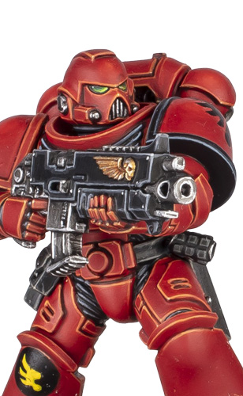
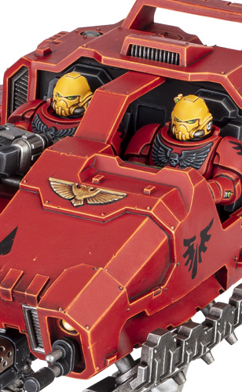

直接萃取自您 Mac 正在運行的官方《Warhammer 40,000》App 原版數據庫！由突擊分隊連長率領，配備聖物盾與大師級動力武器，協同靈能智庫員、先鋒老兵跳躍小隊、仲裁者小隊以及重裝蘭德速攻艇，發動雷霆打擊！


| 武器名稱 | 類型 | 射程 | 攻擊次數 A | 命中 BS/WS | 力量 S | 穿甲 AP | 傷害 D | 武器關鍵字 |
|---|---|---|---|---|---|---|---|---|
| 重型爆矢手槍 (Heavy Bolt Pistol) | 遠程 | 18" | 1 | 2+ | 4 | -1 | 1 | [手槍 / 近距離 PISTOL] |
| 大師級動力武器 (Master-crafted Weapon) | 近戰 | Melee | 6 | 2+ | 5 | -2 | 2 | [近戰 MELEE] |

| 武器名稱 | 類型 | 射程 | 攻擊次數 A | 命中 BS/WS | 力量 S | 穿甲 AP | 傷害 D | 武器關鍵字 |
|---|---|---|---|---|---|---|---|---|
| 爆矢手槍 (Bolt Pistol) | 遠程 | 12" | 1 | 3+ | 4 | 0 | 1 | [手槍 PISTOL] |
| 電襲術 - 電流脈衝 (Electric Pulse) | 遠程 | 24" | 2 | 3+ | 8 | -2 | 3 | [靈能 PSYCHIC] |
| 電襲術 - 閃電衝擊 (Chain Lightning) | 遠程 | 24" | 3 | 3+ | 4 | -1 | 1 | [靈能, 爆炸 2 BLAST 2] |
| 靈能武器 (Force Weapon) | 近戰 | Melee | 4 | 3+ | 6 | -1 | 2 | [靈能 PSYCHIC] |

| 武器名稱 | 類型 | 射程 | 攻擊次數 A | 命中 BS/WS | 力量 S | 穿甲 AP | 傷害 D | 武器關鍵字 |
|---|---|---|---|---|---|---|---|---|
| 等離子手槍 - 標準 (Plasma Pistol) | 遠程 | 12" | 1 | 3+ | 7 | -2 | 1 | [手槍 PISTOL] |
| 等離子手槍 - 過載 (Supercharge) | 遠程 | 12" | 1 | 3+ | 8 | -3 | 2 | [手槍, 危險 HAZARDOUS] |
| 重型爆矢手槍 (Heavy Bolt Pistol) | 遠程 | 18" | 1 | 3+ | 4 | -1 | 1 | [手槍 PISTOL] |
| 大師級動力武器 (Power Weapon) | 近戰 | Melee | 3 | 3+ | 5 | -2 | 2 | [近戰 MELEE] |

| 武器名稱 | 類型 | 射程 | 攻擊次數 A | 命中 BS/WS | 力量 S | 穿甲 AP | 傷害 D | 武器關鍵字 |
|---|---|---|---|---|---|---|---|---|
| 爆矢步槍 (Bolt Rifle) | 遠程 | 24" | 2 | 3+ | 4 | -1 | 1 | [重型 HEAVY, 突擊 ASSAULT] |
| 榴彈發射器 - 破片 (Frag) | 遠程 | 24" | 2 | 3+ | 4 | -1 | 1 | [爆炸 1 BLAST 1] |
| 榴彈發射器 - 穿甲 (Krak) | 遠程 | 24" | 2 | 3+ | 5 | -2 | 3 | [針對-凶獸/載具 4+] |
| 鏈鋸劍 (Astartes Chainsword) | 近戰 | Melee | 5 | 3+ | 4 | -1 | 1 | [近戰 MELEE] |
| 戰鬥刀和拳頭 (Combat Knife) | 近戰 | Melee | 3 | 3+ | 4 | 0 | 1 | [近戰 MELEE] |

| 武器名稱 | 類型 | 射程 | 攻擊次數 A | 命中 BS/WS | 力量 S | 穿甲 AP | 傷害 D | 武器關鍵字 |
|---|---|---|---|---|---|---|---|---|
| 多管熱熔 (Multi-melta) | 遠程 | 18" | 2 | 3+ | 10 | -4 | D6 | [熱熔 2 MELTA 2] |
| 風暴之怒導彈發射器 (Missile) | 遠程 | 48" | 1 | 3+ | 10 | -3 | 4 | [重裝重創打擊] |
| 重型焚化槍 (Heavy Flamer) | 遠程 | 12" | D6 | - | 5 | -1 | 1 | [激流 TORRENT, 無視掩體] |
| 裝甲衝撞 (Armoured Ram) | 近戰 | Melee | 4 | 3+ | 4 | 0 | 1 | [近戰 MELEE] |
升級：僅限突擊分隊跳躍背包先鋒老兵小隊單位
在一個敵方單位結束一次衝鋒移動時，如果那個敵方單位與該單位處於交戰狀態，那麼直到回合結束前，那個敵方單位近戰攻擊的致傷擲骰 (Wound roll) -1！
升級：僅限突擊分隊仲裁者小隊單位
該單位的爆矢步槍武器獲得 [速射 1 (Rapid Fire 1)]（半程射程內每把步槍攻擊次數增加至 3 次！）。
效果：當進行重整移動時，該己方單位可以最多移動 D6"（大幅突破常規 3" 限制，快速穿插佔領！）。
效果：選擇一個與您的單位處於交戰狀態的敵方單位。那個敵方單位立即進行一次戰鬥震懾擲骰 (Battle-shock test)，並且該擲骰 -1！
效果：該單位本次的所有近戰攻擊獲得 [精準 PRECISION]（可越過護衛直接點殺敵方軍官角色！）。